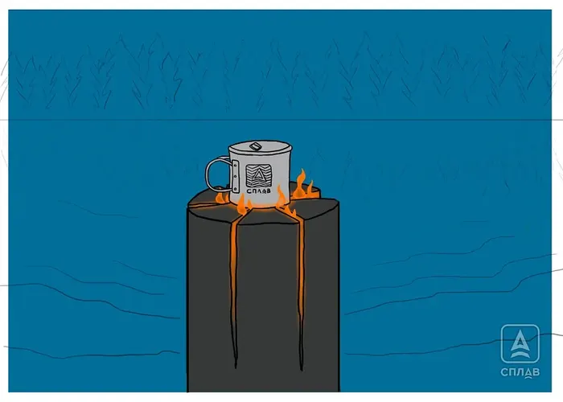

Finnish candle
Also known as a taiga candle. Convenient for cooking, but noticeably worse than other lays at warming or lighting the area around it. The simple version needs a log at least 20 cm in diameter and some wire: split the log into 4-8 wedges, plane the inner faces, reassemble it, and cinch it back together with wire, leaving small gaps for airflow. The classic version cuts 70-80% of the way through the log instead of splitting it fully. Depending on size, a candle like this burns anywhere from half an hour to four hours.
- Take a dry log at least 20 cm in diameter.
- Split it into 4-8 wedges (or saw down 70-80% of the log's length without splitting it all the way through).
- Plane or shave the inner faces of the wedges to make room for tinder.
- Reassemble the log around tinder placed in the center, and cinch it together with wire around the outside, leaving small gaps for airflow.
- Light the tinder from the top center. For easier cooking, dig the candle in slightly or use a flat-cut top so a pot sits securely on top.

Photo: Splav.ru